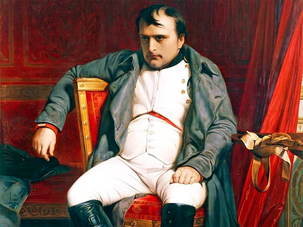
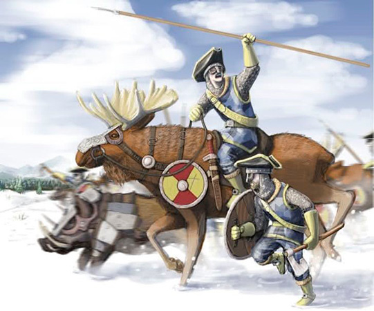
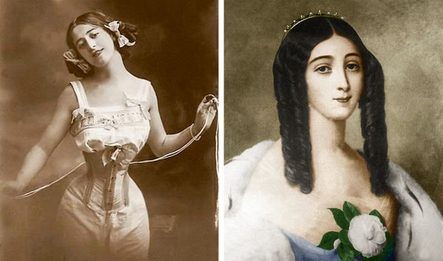

Arthur Muniz
20 de Abril de 2022
1. O artista Michelangelo ilustrava cada lista de compras
Ele fazia isso por uma boa razão. Como dizem os historiadores, o ajudante de Michelangelo era analfabeto portanto o gênio das artes pintava cuidadosamente o que e em que quantidade ele tinha que comprar. Na imagem, vemos que ele dividia a comida diária em três partes, cada uma delas com pão, vinho e peixe.
2. Leonardo da Vinci era vegetariano e lutava pela liberdade dos animais
Giorgio Vasari, um artista e escritor que viveu na mesma época que Da Vinci, contava que o pintor amava os animais e comprava aves em jaulas apenas para soltá-las. O próprio pintor escreveu em seu diário: Se uma pessoa quer ser livre, por que ela mantém aves e animais em jaulas? O homem é o verdadeiro rei dessas criaturas, mas vivemos matando todas elas. Ainda jovem eu me neguei a comer carne
.
3. O papagaio de Winston Churchill continua xingando Hitler
A ave, que pertenceu ao estadista britânico Winston Churchill (1874-1965) completou 120 anos em 2019. Além de estar vivinho da Silva, consta que o papagaio continua xingando os nazistas igualzinho ao seu falecido dono.
4. Durante a Primeira Guerra Mundial, um macaco foi promovido a cabo

Pouco tempo antes da Primeira Guerra Mundial, Albert Marr descobriu um babuíno em sua fazenda, em Pretória, na África do Sul. Ele adorou o macaco e deu a ele o nome de Jackie. Durante a guerra, o babuíno acabou se tornando o mascote da infantaria de Marr.
5. O urso que enfrentou os nazistas
Wojtek foi um filhote de urso-siríaco adotado pelos soldados da 22ª Companhia de Suprimentos de Artilharia do Segundo Corpo do Exército Polaco. Seu nome é uma antiga denominação eslava derivada de duas palavras: "woj" e "ciech" De acordo com depoimentos de membros do pelotão, o urso era tratado como um filho pelos membros companhia, que o alimentavam com leite e leite condensado em garrafas que simulavam mamadeiras. O animal então foi crescendo e passou a comer frutas, peixes, mel e marmelada.
6. Napoleão Bonaparte, na verdade, tinha 1,70m de altura e não era muito menor que um francês mediano de sua época
O mito de que o imperador francês era baixinho pode ter surgido pela diferença nas medidas usadas na França e na Inglaterra. Como os Estados Unidos tem maior influência mundial que a França, e como, por sua vez, suas referências são inglesas, o mal-entendido se tornou popular e histórico.
7. Em 1700 a cavalaria sueca fez experiências com alces
Os alces são muito maiores do que os cavalos. Eles causam medo e batem os chifres justamente no coração da infantaria inimiga. O aparecimento desses animais no campo de batalha certamente faria todo mundo sair correndo, mas o ambicioso plano não foi colocado em prática por algumas razões, por exemplo: por serem muito inteligentes, assim que vissem um alce morrer todos os outros alces se recusariam a ir pois sabiam que iriam morrer.
8. A epidemia de tuberculose condicionou os padrões de beleza e da moda
No século XIX, uma epidemia de tuberculose varreu a Europa. A pessoa ficava com a pele pálida, o corpo magro, os lábios vermelhos e as bochechas rosadas. Esses sintomas rapidamente se transformaram em um ideal de beleza feminino. Portanto, os cosméticos e as roupas começaram a seguir essa tendência. Após algum tempo, era quase impossível saber se a pessoa estava doente ou na moda.
9. Existe uma lâmpada que permanece ligada continuamente há mais de 113 anos na cidade de Livermore, na Califórnia
A Lâmpada Centenária (em inglês: Centennial Bulb, também referida como Centennial Light) é a lâmpada incandescente mais duradoura do mundo, acesa desde 1901. Está localizada em Livermore, Califórnia e é mantida pelo Corpo de Bombeiros de Livermore-Pleasanton.